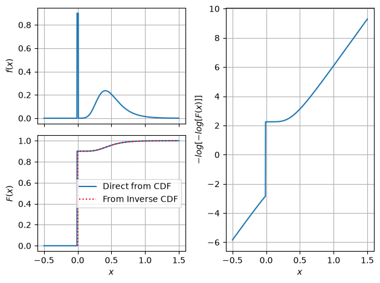
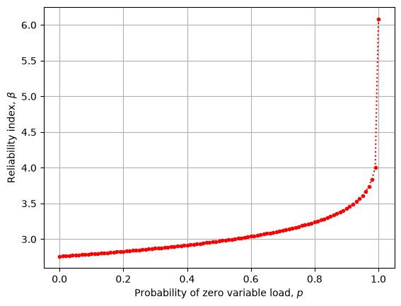

Download notebook · Download runnable bundle
Dependencies: PySTRA core.
Load combinations and FBC processes#
Construct representative leading-action cases and connect their load distributions to reference-period assumptions.
Before you start: the introductory reliability tutorial.
Example#
This demonstration problem is adapted from Example 4, pp. 190-191, in Sørensen (2004). The parameter values are slightly modified for demonstration.
Setup#
[1]:
import pystra as ra
import numpy as np
import pandas as pd
from matplotlib import pyplot as plt
Define the limit state function#
The LSF supplied to LoadCombination can be any valid PySTRA LSF. Here the deterministic coefficient cg is kept as an explicit input.
[2]:
def lsf(R, G, Q1, Q2, cg):
return R - (cg * G + 0.8 * Q1 + 0.2 * Q2)
Define the load and resistance distributions#
Start by defining the distributions that represent the structural reliability model. In this first example we use explicit annual-maximum and point-in-time distributions so that each load case can state exactly which distribution is used.
Define the annual max distributions
[3]:
Q1max = ra.Gumbel("Q1", 1, 0.2) # Imposed Load
Q2max = ra.Gumbel("Q2", 1, 0.4) # Wind Load
Next specify inferred point-in-time distributions. These are ordinary PySTRA distributions and can be inspected or used directly.
[4]:
Q1pit = ra.Gumbel("Q1", 0.89, 0.2) # Imposed Load
Q2pit = ra.Gumbel("Q2", 0.77, 0.4) # Wind Load
Define the deterministic coefficient used by the LSF.
[5]:
cg = ra.Constant("cg", 0.4)
Finally, define any other random variables in the problem
[6]:
Rdist = ra.Lognormal("R", 2.0, 0.15) # Resistance
Gdist = ra.Normal("G", 1, 0.1) # Permanent Load (Other load variable)
Specify explicit load-combination cases#
A LoadCombination is now most clearly written as named explicit cases. Each case contains the actual variables used in that reliability analysis. This avoids hiding structural reliability assumptions inside a max/pit switching dictionary.
The Q1_leading and Q2_leading cases are Turkstra-style leading-action cases. The Q1Q2_max case is also shown as a deliberately conservative comparison where both variable actions are taken as annual maxima.
[7]:
cases = {
"Q1Q2_max": {"R": Rdist, "G": Gdist, "Q1": Q1max, "Q2": Q2max},
"Q1_leading": {"R": Rdist, "G": Gdist, "Q1": Q1max, "Q2": Q2pit},
"Q2_leading": {"R": Rdist, "G": Gdist, "Q1": Q1pit, "Q2": Q2max},
}
Specify user-defined correlation (optional)#
A correlation matrix can be supplied for the random variables in the reliability problem.
[8]:
variable_names = ["Q1", "Q2", "R", "G"]
correlation_values = np.eye(len(variable_names))
correlation = pd.DataFrame(
data=correlation_values,
columns=variable_names,
index=variable_names,
)
rho_q1_q2 = 0.8
correlation.loc["Q1", "Q2"] = rho_q1_q2
correlation.loc["Q2", "Q1"] = rho_q1_q2
print(correlation)
Q1 Q2 R G
Q1 1.0 0.8 0.0 0.0
Q2 0.8 1.0 0.0 0.0
R 0.0 0.0 1.0 0.0
G 0.0 0.0 0.0 1.0
Specify user-defined analysis options (optional)#
Analysis options can be supplied in the usual PySTRA way. In this tutorial we set error thresholds and change the default transform method to use singular value decomposition.
[9]:
options = ra.FORMOptions(limit_state_tolerance=1e-3, gradient_tolerance=1e-3, transform="svd")
Instantiate LoadCombination#
The explicit cases mapping is the canonical interface. The remaining arguments are the limit-state function and optional analysis inputs.
[10]:
lc = ra.LoadCombination(
limit_state=lsf, cases=cases, constants=[cg], correlation=correlation
)
Inspect the generated stochastic models#
Because the cases are explicit, they can be inspected before any analysis is run.
[11]:
for name in lc.case_names:
print(name, list(lc.case(name).keys()))
Q1Q2_max ['R', 'G', 'Q1', 'Q2']
Q1_leading ['R', 'G', 'Q1', 'Q2']
Q2_leading ['R', 'G', 'Q1', 'Q2']
Analyse load cases#
Run FORM for each named case.
[12]:
form = {}
for name in lc.case_names:
form[name] = ra.calibration.analyze_case(lc, case_name=name, options=options)
Detailed output for one load case#
[13]:
display(form["Q1_leading"])
FORMResult(method='FORM', status='converged', message='Converged', n_limit_state_evaluations=49, variable_names=('R', 'G', 'Q1', 'Q2'), failure_probability=0.01962433765718801, beta=2.0615701820848518, design_index=2.0615701820848518, design_point_x=array([1.89631498, 1.01896362, 1.46169878, 1.59685254]), design_point_u=array([-1.92655353, -0.67334457, 0.18963623, -0.22160392]), alpha=array([-0.93450278, -0.32663091, 0.09199301, -0.10748991]), standard_space='normal', iterations=5, limit_state_error=4.372472456345675e-09, direction_error=3.344382828997521e-05)
Display reliability per load combination#
[14]:
for name, result in form.items():
print(f"{name}: β = {result.beta:.2f}")
Q1Q2_max: β = 1.95
Q1_leading: β = 2.06
Q2_leading: β = 2.16
Ferry-Borges-Castanheta process model#
For variable actions represented by a Ferry-Borges-Castanheta rectangular-wave process, use FBCProcess to expose the process assumptions. The FBC process defines the load magnitude distributions. Turkstra’s rule defines the combination cases: each variable action is considered as leading in turn, while the others are taken as companion actions. In this context a companion action may be a point-in-time value or an intermediate maximum over the leading action’s interval.
In Sørensen’s imposed-load/wind example the reference period is T = 1 year. The imposed load has tau_1 = 0.5 years, so r_1 = T / tau_1 = 2. The wind load has tau_2 = 1 / 360 years, so r_2 = T / tau_2 = 360. These recurrence counts describe the underlying FBC process; they are not load-combination factors.
The easy mistake is to look at the companion wind distribution and conclude that wind has somehow become an r = 2 process. It has not. If Q1 is leading, Turkstra’s rule takes Q2 as the maximum over the Q1 interval tau_1. That interval contains r_2 / r_1 = 180 wind intervals. Written in terms of the annual-maximum wind distribution, this gives F_Q2C = F_Q2,max ** (1 / r_1) = F_Q2,max ** 0.5. The wind process still has r_2 = 360; the companion wind value is a half-year maximum.
[15]:
reference_period = 1.0
tau_1 = 0.5
tau_2 = 1 / 360
Q1_process = ra.FBCProcess.from_maximum(
"Q1", maximum=Q1max, maximum_duration=reference_period, basic_interval=tau_1
)
Q2_process = ra.FBCProcess.from_maximum(
"Q2", maximum=Q2max, maximum_duration=reference_period, basic_interval=tau_2
)
turkstra_lc = ra.LoadCombination.turkstra(
limit_state=lsf,
resistance={"R": Rdist},
permanent={"G": Gdist},
variable={"Q1": Q1_process, "Q2": Q2_process},
constants=[cg],
reference_period=reference_period,
correlation=correlation,
)
for name in turkstra_lc.case_names:
case = turkstra_lc.case(name)
print(f"{name}:")
for load in ("Q1", "Q2"):
print(f" {load}: {case[load].dist_type}, FBC intervals = {case[load].N:.2f}")
Q1_leading:
Q1: Maximum, FBC intervals = 2.00
Q2: Maximum, FBC intervals = 180.00
Q2_leading:
Q1: Maximum, FBC intervals = 1.00
Q2: Maximum, FBC intervals = 360.00
The generated Turkstra cases can be analysed in exactly the same way as the manually specified cases.
[16]:
turkstra_form = {}
for name in turkstra_lc.case_names:
turkstra_form[name] = ra.calibration.analyze_case(turkstra_lc, case_name=name, options=options)
for name, result in turkstra_form.items():
print(f"{name}: β = {result.beta:.2f}")
Q1_leading: β = 2.06
Q2_leading: β = 2.15
Distributions for load combinations#
PySTRA includes a range of tools to represent variable loads and load processes:
Zero-Inflated distributions allow for a probability of non-occurrence of a load.
Maximum distributions give the distribution of maxima of a supplied parent or point-in-time distribution.
MaxParent distributions infer a parent distribution from a supplied maximum.
FBCProcess wraps
MaximumandMaxParentfor Ferry-Borges-Castanheta rectangular-wave process modelling.LoadCombination.turkstra uses FBC process distributions to generate leading-action combination cases according to Turkstra’s rule.
Zero-inflated distribution#
[17]:
zin = ra.ZeroInflated("Q", ra.Gumbel("G", 0.5, 0.2), p=0.9)
zin.zero_tol = 1e-2
x = np.linspace(-0.5, 1.5, 1000)
pdf = zin.pdf(x)
cdf = zin.cdf(x)
u = np.linspace(0, 1, 10001)
ppf = zin.ppf(u)
fig, axs = plt.subplot_mosaic([["a", "c"], ["b", "c"]], sharex=True)
ax = axs["a"]
ax.plot(x, pdf)
ax.set_ylabel("$f(x)$")
ax.grid()
ax = axs["b"]
ax.plot(x, cdf, label="Direct from CDF")
ax.plot(ppf, u, "r:", label="From Inverse CDF")
ax.set_ylabel("$F(x)$")
ax.set_xlabel("$x$")
ax.legend(loc="center right")
ax.grid()
ax = axs["c"]
ax.plot(x, -np.log(-np.log(cdf)))
ax.set_ylabel("$-log[-log[F(x)]]$")
ax.set_xlabel("$x$")
ax.grid()
plt.tight_layout()
# fig.set_layout('tight');

Figure. Density, cumulative probability and a transformed probability plot describe the zero-inflated load. Direct CDF and inverse-CDF evaluations coincide for the continuous part.
Example#
[18]:
def lsf(R, G, Q):
return R - (G + Q)
[19]:
def reliability(p=0.0):
ls = ra.LimitState(lsf)
sm = ra.StochasticModel()
sm.add_variable(ra.Lognormal("R", 6.0, 0.15))
sm.add_variable(ra.Normal("G", 4.5, 0.2))
g = ra.Gumbel("Q", 0.5, 0.2)
if p == 1.0:
sm.add_variable(ra.Constant("Q", 0.0))
elif p == 0.0:
sm.add_variable(g)
else:
zig = ra.ZeroInflated("Q", g, p=p)
sm.add_variable(zig)
form = ra.FORM(sm, ls)
return form.run()
[20]:
betas = []
ps = np.linspace(0, 1.0, 101)
for p in ps:
result = reliability(p=p)
betas.append(result.design_index)
[21]:
fig, ax = plt.subplots()
ax.plot(ps, betas, "r.:")
ax.set_xlabel("Probability of zero variable load, $p$")
ax.set_ylabel("Reliability index, $β$")
ax.grid()

Figure. The FORM reliability index varies with the assumed probability of zero variable load; the load-occurrence model affects the reliability calculation.
Interpretation#
Choose load processes and reference periods before constructing leading and companion cases. A companion distribution represents an interval of the same physical process; it does not redefine that process’s occurrence rate.
Continue: User guide · API reference · Theory